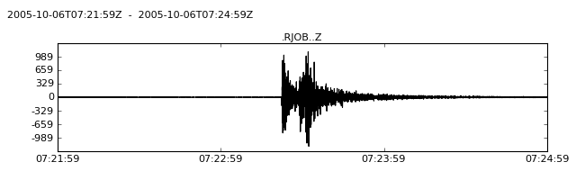

Seismograms of various formats (e.g. SAC, MiniSEED, GSE2, SEISAN, Q, etc.) can be imported into a Stream object using the read() function.
Streams are list-like objects which contain multiple Trace objects, i.e. gap-less continuous time series and related header/meta information.
Each Trace object has a attribute called data pointing to a NumPy ndarray of the actual time series and the attribute stats which contains all meta information in a dictionary-like Stats object. Both attributes starttime and endtime of the Stats object are UTCDateTime objects.
The following example demonstrates how a single GSE2-formatted seismogram file is read into a ObsPy Stream object. There exists only one Trace in the given seismogram:
>>> from obspy.core import read
>>> st = read('http://examples.obspy.org/RJOB_061005_072159.ehz.new')
>>> print st
1 Trace(s) in Stream:
.RJOB..Z | 2005-10-06T07:21:59.849998Z - 2005-10-06T07:24:59.844998Z | 200.0 Hz, 36000 samples
>>> len(st)
1
>>> tr = st[0] # assign first and only trace to new variable
>>> print tr
.RJOB..Z | 2005-10-06T07:21:59.849998Z - 2005-10-06T07:24:59.844998Z | 200.0 Hz, 36000 samples
Seismogram meta data, data describing the actual waveform data, are accessed via the stats keyword on each Trace:
>>> print tr.stats
network:
station: RJOB
location:
channel: Z
starttime: 2005-10-06T07:21:59.849998Z
endtime: 2005-10-06T07:24:59.844998Z
sampling_rate: 200.0
delta: 0.005
npts: 36000
calib: 0.0948999971151
_format: GSE2
gse2: AttribDict({'instype': ' ', 'datatype': 'CM6', 'hang': -1.0, 'auxid': 'RJOB', 'vang': -1.0, 'calper': 1.0})
>>> tr.stats.station
'RJOB'
>>> tr.stats.gse2.datatype
'CM6'
The actual waveform data may be retrieved via the data keyword on each Trace:
>>> tr.data
array([-38, 12, -4, ..., -14, -3, -9])
>>> tr.data[0:3]
array([-38, 12, -4])
>>> len(tr)
36000
Stream objects offer a plot() method for fast preview of the waveform (requires the obspy.imaging module):
>>> st.plot()
[source code, hires.png, pdf]
